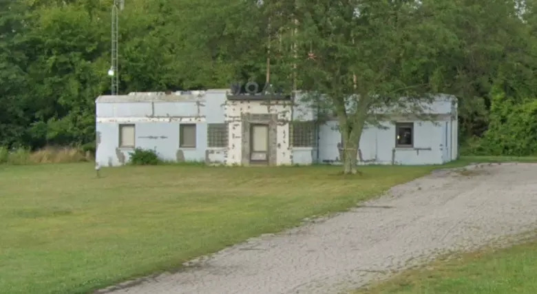

Welcome to WDLK-TV
Your home for original entertainment on Channel 34.

WDLK Broadcasting Inc. • 14200 Route 7 • Deep Lake, OR 97701
Welcome to WDLK-TV
Your home for original entertainment on Channel 34.

WDLK Broadcasting Inc. • 14200 Route 7 • Deep Lake, OR 97701
Program Schedule
Week of March 10, 1997 — Final Schedule
| TIME | MON | TUE | WED | THU | FRI |
|---|---|---|---|---|---|
| 7:00 AM | Ranger Rick's Nature Hour | Ranger Rick's Nature Hour | Ranger Rick's Nature Hour | Ranger Rick's Nature Hour | Ranger Rick's Nature Hour |
| 8:00 AM | The Fridge Friends | The Fridge Friends | The Fridge Friends | The Fridge Friends | The Fridge Friends |
| 9:00 AM | The Puzzle Palace | Captain Cosmos | The Puzzle Palace | Captain Cosmos | The Puzzle Palace |
| 10:00 AM | — OFF AIR — | ||||
| 3:00 PM | Captain Cosmos | The Puzzle Palace | Captain Cosmos | The Puzzle Palace | Movie Matinee |
| 4:00 PM | The Fridge Friends | The Fridge Friends | The Fridge Friends | The Fridge Friends | Movie Matinee |
| 5:00 PM | Deep Lake Community Hour | Deep Lake Community Hour | Deep Lake Community Hour | Deep Lake Community Hour | Movie Matinee |
| 6:00 PM | Movie Matinee | Movie Matinee | Movie Matinee | Movie Matinee | Movie Matinee |
| 8:00 PM | — OFF AIR — | ||||
| 12:00 AM | — OFF AIR — | S/T-7 | |||
Schedule subject to change without notice. Final weekly schedule issued prior to broadcast cessation.
About WDLK-TV
WDLK-TV is a locally-owned television station serving the Deep Lake community on UHF Channel 34.
Our mission is to provide original entertainment and educational programming for viewers of all ages.
WDLK Broadcasting Inc. is a subsidiary of Lakeview Holdings LLC.
Contact Us
WDLK-TV
14200 Route 7
Deep Lake, OR 97701
Phone: (541) 555-0199
Fax: (541) 555-0198
General Inquiries: info@wdlk-tv.com
Programming: programming@wdlk-tv.com
For technical issues with this website, contact the webmaster.
Staff Directory
Internal use only. Not for public distribution.
| Station Manager | R. Calloway | 1991 — present |
| Technical Director | D. Rourke | 1984 — 1996 |
| Programming Director | M. Hale | 1984 — 1993 |
| Production | E. Vasquez | 1985 — 1996 |
| Production | K. Osei | 1988 — 1996 |
| Operations | T. Marsh | 1984 — 1996 |
| Community Liaison | H. Wentworth | 1990 — 1996 |
Note: Staff records prior to 1991 incomplete. Original personnel files transferred to off-site storage per directive RC-1996-001. Current status of former employees: SEE SUPPLEMENTAL FILE S-7.
Last updated: 08/01/1996